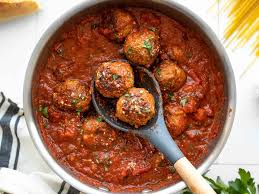

Meatballs

Description
Meatballs are a classic Italian dish that is a family favorite. They are made with a mixture of ground beef, breadcrumbs, and a variety of other ingredients such as herbs and spices. The meatballs are then rolled into small balls and baked in the oven until they are cooked through and golden brown. Meatballs are a versatile dish that can be served on their own, with pasta, or in a sandwich.
Ingredients
- 1 pound ground beef
- 1/2 cup breadcrumbs
- 1/4 cup grated Parmesan cheese
- 1/4 cup chopped fresh parsley
- 1 clove garlic, minced
- 1 egg, beaten
- 1 teaspoon salt
- 1/2 teaspoon black pepper
- 1/2 teaspoon dried oreg
Directions
- Preheat oven to 375 degrees F (190 degrees C).
- In a large bowl, combine ground beef, breadcrumbs, Parmesan cheese, parsley, garlic, egg, salt, pepper, and oregano.
- Shape mixture into 1 inch meatballs and place on a baking sheet.
- Bake in preheated oven for 20 to 25 minutes, or until meatballs are cooked through and golden brown.